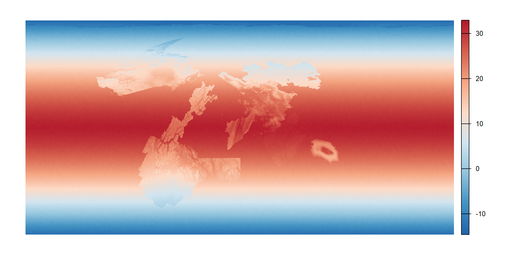
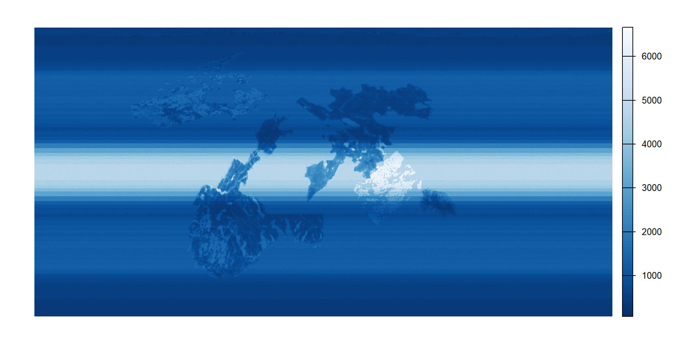
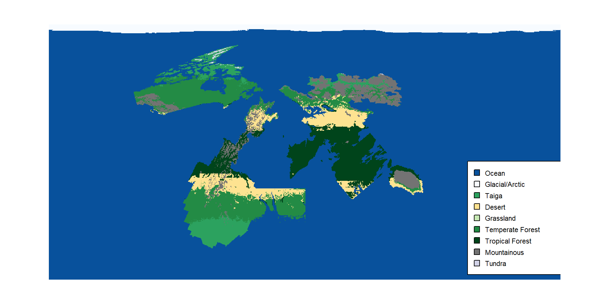

5 Climate and Biomes
5.1 Of the Climate of EART-H
RA, our maker, was no learned clerk of natural philosophy, yet they possessed a goodly and sufficient understanding of how heat and water, latitude and altitude, do conspire together to fashion the manifold living garments of the planet’s surface. From the frozen polar wastes, where the very breath of a traveller doth turn to crystals upon the wind, to the lush tropical forests, where the rains fall without ceasing and all manner of green and creeping things do flourish — this world supports a most remarkable variety of kingdoms of life, as I have witnessed with mine own eyes in my many journeyings.
5.2 Of Temperature, Which Governeth All the Rest
Now I shall speak of Temperature, which is the very foundation and chief governor of all the climates of EART-H. For in my travels I have found it to be a most certain truth that the heat of the world doth vary in orderly fashion with latitude — being greatest and most fierce at the equator, where the sun standeth highest and burneth without mercy, and coldest at the poles, where winter holdeth perpetual dominion. Moreover, as one ascendeth into the high places and mountaintops, the air doth grow thin and the warmth diminisheth, so that even beneath a tropic sun one may find frost upon the peaks.
5.3 Of Precipitation, and the Waters That Fall
Of the Rains and Waters that fall upon EART-H, I must confess that their patterns are of a far more marvellous complexity than those of temperature alone. For the manner by which moisture is bestowed upon the land is governed by many intertwined causes — the latitude of the place, its nearness to the great oceans and seas, the prevailing winds which blow hither and thither across the globe, the shape and height of the mountains and valleys, and indeed the temperature itself, for warm air doth carry more water than cold, as any mariner will attest. The great rivers of wind that the learned call the Gales of Passage do sweep across the middle latitudes in broad meandering bands, carrying with them the storms and tempests that water the lands beneath their passage.

And so it is that these sundry forces, working in concert upon the airs and waters, do give rise to four great girdles of climate, which I have myself traversed; and I shall set down here not only what I have seen but also the causes that are alleged for them, leaving the reader to judge which are true and which are the invention of idle folk in winter.
About the belly of the world lieth the Girdle of Perpetual Rain, where the waters fall without ceasing and the air is grown so thick that a candle will scarce keep its flame. A monk of Tusque, one of great learning though much given to drink, did assure me that the sun standeth so near overhead in that place that it boileth the ocean as a pot upon a fire, and the steam thereof must needs come down again, there being nowhere else in all the world for it to go. Others hold that the equator is the very seam whereat RA joined the two halves of EART-H together, and that it leaketh. I have examined the ground most closely in three provinces and can confirm only that it is wet.
To either side of this girdle lie the Thirsty Lands, where a traveller may journey a twelvemonth and see no rain at all. The sages of those parts do reason that the water which riseth at the belly of the world, having gone up so exceeding high, overshooteth in its falling and cometh down elsewhere, as an arrow loosed too strongly flieth past the mark; which seemeth to me plausible enough. But the common folk say rather that these are the places where RA sat down to rest amid the labour of creation, and the ground was scorched by their sitting. And in truth the sand in certain parts is glassy, as though it had been burned, so I do not lightly dismiss them.
Further still lie the Temperate Girdles, which are the most agreeable to habitation, where the rains come in their season and the storms walk from west to east in orderly procession, like pilgrims who know the road. Here the learned are all in agreement as to the causes, which I take for a sign that they have not thought upon it very hard.
And at the two caps of the world lie the Frozen Wastes, where almost no rain nor snow falleth at all — a thing which astonished me greatly, for I had supposed the poles to be the wettest places of the earth, being the coldest. But it was explained to me by a whaler of the northern seas that cold air can carry but little water, as a beggar can carry but little gold; and that the snow which lieth upon the northern land is not new-fallen but ancient, having been in that place since the Funding, and merely blown about from spot to spot by the wind, so that it seemeth always to be snowing and never is. Whether this be so I cannot say.
Yet the two caps are not brothers, and this the maps do not tell you. At the northern cap there is land, hard and ancient and ringed about with mountains. At the southern cap there is no land at all — only a cold and landless sea, and at the very heart of that sea the water turneth. I have not seen it and do not intend to. Those few mariners who have come within sight of it and returned again speak of a whirlpool of such compass that one standing at its lip cannot see across to the other side, and they say the sea poureth down into it without ceasing and is never emptied, and that the sound of it may be heard a full day’s sail before ever the thing itself is seen.
What becometh of all that water, none could tell me. Some hold that it feedeth a serpent which lieth beneath the world and drinketh for ever. Others say that RA left the bottom of EART-H unfinished, having wearied of the labour, and that what we call a whirlpool is but the hole where the making stopped. And a cartographer of my own fellowship, who was drunk when they said it and sober when they would not repeat it, told me the sea goeth not down at all but goeth through, and cometh out again upon some further side; which I set down only because it is the manner of thing that soundeth foolish until one hath heard it twice.
I will add here, and let the reader make of it what they will, that in the deep interior of Amazonia there is said to be a river that runneth hot — hot enough to scald a hand, steaming in the cool of the morning, rising up out of the ground from no spring nor snowmelt that any traveller hath found. I have never been to that place. I have only ever heard it spoken of by those who had likewise never been. Whether such a river is, and whence its waters come, I leave to wiser heads than mine.
5.4 Of the Biomes, or Kingdoms of Life
Now I shall tell of the Biomes, which are the great living provinces of EART-H, for it is a most wondrous thing that the marriage of temperature and precipitation doth beget eight distinct kingdoms of life upon the surface of this world. Each biome, as the learned do call them, representeth a unique and particular combination of climatic conditions — of heat and cold, of wetness and drought — which doth sustain its own peculiar assemblage of plants and beasts, as different one from another as the palm tree is from the pine, or the camel from the caribou.

5.5 A Reckoning of the Biomes, in the Manner of the Tax-Clerks
I have attempted, in the manner of the tax-clerks whose methods I confess to admiring, to reckon what portion of the whole surface belongeth to each of these kingdoms of life. The numbers below are not mine alone but were gathered from the surveys of a dozen provinces and reconciled as best I could; where they disagreed I took the middle course, which is the coward’s arithmetic but serves.
| Kingdom of Life | Part in the Hundred |
|---|---|
| Ocean | 83.0 |
| Glacial/Arctic | 2.7 |
| Taiga | 1.7 |
| Grassland | 2.2 |
| Temperate Forest | 4.7 |
| Tropical Forest | 3.4 |
| Mountainous | 2.1 |
| Tundra | 0.1 |
Physical geography is not my strong suit and I ended up relying heavily on AI to select plausible parameters for each stage of this climate framework. The current version incorporates terrain-based orographic effects (using slope and aspect) and jet stream enhancement bands at approximately 30° and 60° latitude. I am still not entirely happy with the precipitation model, which remains more deterministic than I would like, but it is a significant improvement over the earlier version which suffered from a visible artifact where the continental outlines appeared shifted in the precipitation output.
The temperature model uses a latitude^1.5 relationship (steeper mid-latitude gradients than a quadratic), altitude-dependent lapse rates, and regional noise. The precipitation model layers latitude bands, jet stream enhancement, ocean proximity (multi-scale), terrain-based orographic effects, temperature-moisture coupling, elevation drying, and mesoscale noise. Biome thresholds include per-cell noise for more natural boundary transitions.
The technical pieces aside, this was a fascinating journey for me and I would like to develop the framework here into a five-week course on physical geography. What little I could contribute comes from my own undergraduate exposure in “Introduction to Physical Geography” and I would love to get one of my colleagues to help me build it out.
For the most part, my understanding is that the major elements of climate are complex, but ultimately deterministic. The planet needs to be in motion because everything in the universe is in motion. It needs to be in orbit because things that are not in orbit tend to crash into stars or black holes. If it is in orbit it has a relationship with a star and that star provides a source of light and heat. From there we get temperature. I have not specified tilt or elliptical orbit, so I don’t think there are seasons. The complexity of seasonal temperature variation will probably have to wait for the next version. I will have to keep that in mind as I write stories within the world. From temperature and supplied altitude I get temperature variation. Then we have precipitation, which of course assumes water. I tried for a long time to think of ways that straightforward temperature bands and even supply of water could be made more complex, but I am not entirely happy with the result. Biome ultimately arrived deterministically from temperature and precipitation and I had it in the back of my mind to try and match Earth’s own breakdown. It turns out that my efforts to pick exciting landscapes made for a lot more mountainous terrain and I really did throw in Canada at the last minute to make up for a deficit in temperate forest.
A hope of mine for this chapter is that is straightforward enough for students to modify and/or rebuild as they learn some physical geography. I am sure that I have missed some important elements (seasons!) and I would love to see how the information that follows is impacted by those elements.
If you are reading this and happen to have any expertise in climate science and or its implications for speculative fiction, I would welcome any pointers. A starting bibliography for now includes:
- How to Find a Habitable Planet, James Kasting (Kasting 2010) — planetary habitability: what has to be true of a planet before anything can live on it.
- Atmosphere, Weather and Climate, Roger Barry and Richard Chorley (Barry and Chorley 2009) — the standard climatology textbook
- “Whirligig World”, Hal Clement (Clement 1953) — a 1953 essay describing how the planet Mesklin was built outward from its physics.
- “The Creation of Imaginary Worlds: The World Builder’s Handbook and Pocket Companion”, Poul Anderson (Anderson 1974) — a working method for deriving a planet’s geography and climate from its star and orbit.
- The Great Derangement, Amitav Ghosh (Ghosh 2016) — argues that the realist novel cannot represent climate, having been built to handle the probable, while climate arrives as the improbable; a case for the speculative register.
- Sense of Place and Sense of Planet, Ursula K. Heise (Heise 2008) — on the difficulty of holding local attachment and planetary scale in mind at the same time.
- Anthropocene Fictions, Adam Trexler (Trexler 2015) — survey of the climate change novel.
- Science Fiction and Climate Change, Andrew Milner and J. R. Burgmann (Milner and Burgmann 2020) — sociological survey of climate science fiction.
- Green Planets, Gerry Canavan and Kim Stanley Robinson, eds. (Canavan and Robinson 2014) — collection on ecology in science fiction.